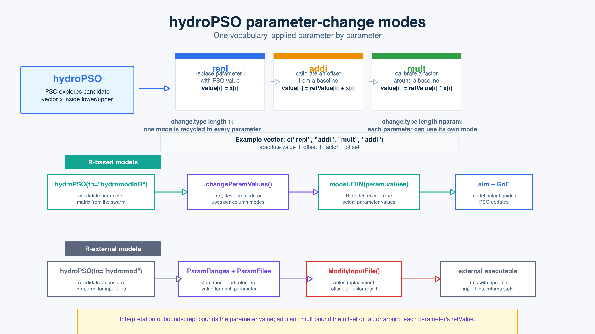

Parameter changes that match how models are actually calibrated
Inspired by the community of the SWAT and SWAT+ hydrological
models, since v.6-0 hydroPSO allows making parameter
updates in three different ways, both for R-based and R-external
models:
- replacement,
- additive change, and
- multiplicative change.
Note: These changes were also possible since v0.5-0, but only for R-external models.
The new change.type vocabulary makes this explicit and
consistent across the two main hydroPSO workflows: models implemented
directly in R (R-based models) and models run through
external executable and input files (R-external
models).
Importantly, change.type can be a single
value applied to all parameters, or a vector
with one entry per parameter.

Why this matters
Hydrological and environmental models are not always calibrated by replacing a parameter with an absolute value. In many operational workflows, a parameter is adjusted relative to a trusted baseline, a regional estimate, a previous calibration, or a value already written in a model input file.
The new parameter-change modes in hydroPSO >= v0.6-0
allow that modelling intent to be represented directly in the
optimisation setup.
The three modes are applied parameter by parameter:
change.type value |
Meaning | Parameter value passed to the model |
|---|---|---|
"repl" |
Replacement. The model parameter value is directly replaced by the PSO value. | value[i] = x[i] |
"addi" |
Additive change. The model parameter value is obtained by adding or
substracting the PSO value from a reference value defined by the new
argument refValue. |
value[i] = refValue[i] + x[i] |
"mult" |
Multiplicative change. The model parameter value is obtained by
scaling the PSO value from a reference value defined by the new argument
refValue. |
value[i] = refValue[i] * x[i] |
The default is change.type = "repl", so already existing
hydroPSO scripts will continue to behave as before. When
change.type has length one, hydroPSO recycles
it to all parameters. When it has one value per parameter, each
parameter can use its own change rule.
R-based models
For models implemented as R functions, use
fn = "hydromodInR" and select the transformation in the
hydroPSO() call, which can be set up as the same change for
all parameters or a different change for each model parameter.
- A scalar
change.typeapplies the same change type to every model parameter:
out <- hydroPSO(
fn = "hydromodInR",
lower = c(0.8, 0.8, 0.8),
upper = c(1.2, 1.2, 1.2),
change.type = "mult",
refValue = c(120, 4.5, 0.35),
model.FUN = "my_hydrological_model",
model.FUN.args = list(obs = Qobs)
)In the previous example, hydroPSO searches for multiplicative factors
between 0.8 and 1.2. The R model receives the
transformed parameter values, not the raw factors.
- Mixed types of parameter changes can be specified by using
individual values for the
change.typeargument:
out <- hydroPSO(
fn = "hydromodInR",
lower = c(20, -2, 0.5, -5),
upper = c(400, 2, 1.5, 5),
change.type = c("repl", "addi", "mult", "addi"),
refValue = c(NA, 4.5, 0.35, 12),
model.FUN = "my_hydrological_model",
model.FUN.args = list(obs = Qobs)
)Here the first parameter is calibrated as an
absolute replacement value, the second and fourth are
calibrated as additive deviations, and the third is
calibrated as a multiplicative factor. The same
arguments can be used in the verification() function, to
replay behavioural parameter sets with the same interpretation:
ver <- verification(
fn = "hydromodInR",
par = behavioural_params,
change.type = c("repl", "addi", "mult", "addi"),
refValue = c(NA, 4.5, 0.35, 12),
model.FUN = "my_hydrological_model",
model.FUN.args = list(obs = Qobs.ver)
)R-external models
For executable or command-line models, the same three types of parameter changes can be applied when hydroPSO writes new values into model input files. The R-external model workflow remains:
-
hydroPSOproposes a candidate value during optimisation. -
ParameterValues2InputFiles()reads the parameter metadata. -
ModifyInputFile()computes the actual value usingrepl,addi, ormult. - The modified input files are used to run the external model.
This is useful when the model input file already contains a
meaningful baseline value. Instead of replacing it,
hydroPSO can optimise an offset or a multiplier while
preserving the file-based workflow used by legacy or compiled
models.
Practical interpretation of bounds
With replacement, lower and
upper are the physical parameter bounds for that parameter.
With additive or multiplicative
changes, they define the search range of the change itself:
additive:
lower = -10,upper = 10searches for changes fromrefValue - 10torefValue + 10.multiplicative:
lower = 0.5,upper = 2searches for values from half to twicerefValue
This makes the calibration setup easier to read: the bounds describe
what hydroPSO explores for each parameter, while
refValue describes the baseline being modified.
Take-home message
The new change.type feature lets
hydroPSO >= 0.6-0 calibrate absolute values, deviations,
and scale factors in the same parameter set. R-based models and
R-external models now share the same conceptual language, making
calibration workflows clearer, more reproducible, and easier to transfer
between research prototypes and production model setups.